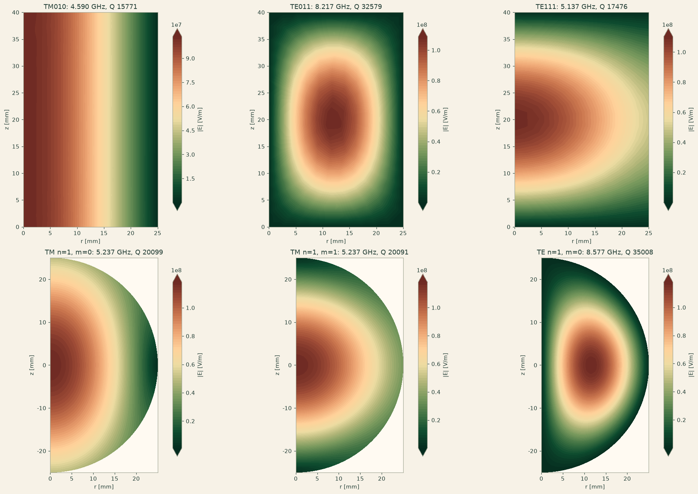

Docs › Examples › Q factors of axisymmetric cavity resonators
Microwaves, cavity resonators · 2D-axisymmetric
Q factors of axisymmetric cavity resonators
A cylindrical and a spherical copper cavity solved on their meridian planes, azimuthal order by azimuthal order, with resonance frequencies and conductor Q.

What it computes
OneSimulation cuts the meridian planes from half solids of revolution read from STEP and solves the full vector field of the azimuthal orders m = 0 and 1 with Nedelec elements for (E_r, E_z) and Lagrange elements for r E_phi; the eigenfrequency study returns every resonance between 4 and 9 GHz without spurious modes, with the copper walls as a frequency-dependent surface impedance, so that each complex frequency gives the quality factor. The script that builds the STEP files comes with the notebook.
What it checks
All 14 resonances match the Bessel and spherical-Bessel frequencies to 1.3e-4 or better; TM010 has Q 15771 against 15771 (3e-5), TE011 32579 against 32597, the sphere's TM n=1, TM n=2 and TE n=1 modes 20099, 19486 and 35008 against Harrington's 20102, 19489 and 35033 (below 7e-4), and the m = 1 members of the sphere's families equal the m = 0 ones to 1.8e-6.
The notebook
The complete notebook, cell by cell. Run it to produce the figures and the comparison printout.
The field of a body of revolution separates into azimuthal modes \(\mathbf E(r,\varphi,z)=\big(E_r,E_\varphi,E_z\big)(r,z)\,e^{im\varphi}\). For each whole number \(m\) the three components live on the meridian plane (\(r\), \(z\)): FrequencyDomainMaxwell with the polarization Erphiz and azimuthal_mode=m solves them with Nédélec elements for \((E_r,E_z)\) and Lagrange elements for \(rE_\varphi\), so that the gradient fields of zero frequency are exactly represented and projected out of the eigenvalue problem. A 3D mode with \(m\neq0\) appears twice (\(\cos m\varphi\) and \(\sin m\varphi\)); the meridian returns it once.
The copper walls are a surface impedance \(Z_s=(1-i)\sqrt{\omega\mu_0/(2\sigma)}\) (SurfaceImpedanceBoundary), taken at the frequency of each resonance; the complex eigenfrequency gives the quality factor \(Q=\operatorname{Re}f/(2|\operatorname{Im}f|)\).
| boundary | condition | |---|---| | walls | surface impedance of copper, \(\sigma=5.8\cdot10^7\) S/m | | axis \(r=0\) | regular: \(rE_\varphi=0\), and \(E_z=0\) for \(m\neq0\) |
Reference. D. M. Pozar, Microwave Engineering, 4th ed., §6.3: a cylinder of radius \(R\) and length \(L\) resonates at \(f_0=\tfrac{c}{2\pi}\sqrt{(x/R)^2+(p\pi/L)^2}\) with the Bessel zeros \(x=j_{mn}\) (TM\(_{mnp}\)) and \(x=j'_{mn}\) (TE\(_{mnp}\), \(p\geq1\)); for TM\(_{010}\) \(Q_c=\eta j_{01}/\big(2R_s(1+R/L)\big)\) and for TE\(_{011}\)
R. F. Harrington, Time-Harmonic Electromagnetic Fields, §6-12: a sphere of radius \(a\) resonates at the roots of \(j_n(ka)=0\) (TE\(_n\)) and \([x\,j_n(x)]'_{x=ka}=0\) (TM\(_n\)), \(2n+1\) modes (\(m=-n\ldots n\)) at each, with \(Q_c\,\delta/a=1\) (TE) and \(1-n(n+1)/(ka)^2\) (TM). The walls lower each resonance to \(f_0(1-1/(2Q_c))\).
import numpy as np
from onesim.cad.exchange import load
from onesim.materials import VACUUM_PERMEABILITY, VACUUM_PERMITTIVITY
from onesim.materials.electromagnetic import IsotropicElectromagneticMaterial
from onesim.meshing import TriangularMesher
from onesim.numerics import Numerics
from onesim.numerics.fem import FiniteElement, Nedelec, RevolvedH1SpaceFactory
from onesim.numerics.linear import ComplexSparseDirect
from onesim.physics.electromagnetics import (
FrequencyDomainMaxwell,
SurfaceImpedanceBoundary,
electromagnetic_modes,
)
from onesim.simulation import Problem, Simulation
from onesim.visualization import plots, theme
from scipy.optimize import brentq
from scipy.special import jn_zeros, jnp_zeros, spherical_jn
theme.set()
light = 1 / np.sqrt(VACUUM_PERMEABILITY * VACUUM_PERMITTIVITY)
eta = np.sqrt(VACUUM_PERMEABILITY / VACUUM_PERMITTIVITY)
copper = 5.8e7Geometry and mesh
The STEP files hold half of each cavity as a solid of revolution; section with the plane \(y=0\) returns the meridian planes, a rectangle and a half disc, with the face name walls on their metal sides. Triangles of 2.5 mm (cylinder) and 1 mm (sphere, to follow the circle closely).
names = ("cylindrical", "spherical")
parts = {name: load(f"axisymmetric_cavity_q_factors_{name}.step") for name in names}
planes = {name: parts[name].section((0, 1, 0)) for name in names}
meshes = {
"cylindrical": TriangularMesher(target_size=2.5e-3).generate(planes["cylindrical"]),
"spherical": TriangularMesher(target_size=1e-3).generate(planes["spherical"]),
}
fig = plots.figure(2, 2, size=(13, 12))
for column, name in enumerate(names):
plots.geometry(
parts[name],
selection={"copper walls": parts[name].boundaries.walls},
labels=False,
camera=plots.Camera(elevation=20, azimuth=-150),
title=f"{name.capitalize()} cavity, half (STEP)",
ax=fig[column],
)
plots.mesh(
meshes[name],
groups=("all",),
legend=False,
title=f"Meridian plane: {meshes[name].cell_count} triangles",
ax=fig[2 + column],
)
plots.show()Eigenfrequency study
For each cavity and each order \(m=0,1\): one model on the meridian, solved once, and every resonance between 4 and 9 GHz from electromagnetic_modes.
numerics = Numerics(
spatial=FiniteElement(element=Nedelec(order=2), provider=RevolvedH1SpaceFactory()),
linear_solver=ComplexSparseDirect(),
)
model = lambda plane, m: FrequencyDomainMaxwell(
domain=plane.domain(),
frequency=6e9,
material=IsotropicElectromagneticMaterial(),
polarization="Erphiz",
azimuthal_mode=m,
phasor_convention="exp(-i*omega*t)",
amplitude_convention="peak",
)
solve = lambda name, mm: Simulation(
problem=Problem(
name="Copper cavity",
geometry=planes[name],
physics=(mm,),
boundary_conditions=(
SurfaceImpedanceBoundary(
physics=mm, boundary=planes[name].boundaries.walls, conductivity=copper
),
),
),
mesh=meshes[name],
numerics=numerics,
).solve_stationary()
models = {(name, m): model(planes[name], m) for name in names for m in (0, 1)}
modes = {
key: electromagnetic_modes(
solve(key[0], models[key]), models[key], frequency_range=(4e9, 9e9)
)
for key in models
}Results
Each computed mode is named by the nearest closed-form resonance of its family. Where a closed form of \(Q_c\) is known, the frequency reference includes the shift by the walls.
radius, length = planes["cylindrical"].size[:2]
sphere = planes["spherical"].size[0]
resistance = lambda f: np.sqrt(np.pi * f * VACUUM_PERMEABILITY / copper)
cylinder = lambda x, p: light / (2 * np.pi) * np.hypot(x / radius, p * np.pi / length)
te_root = {n: brentq(lambda x: spherical_jn(n, x), n + 2.5, n + 3.8) for n in (1, 2)}
tm_root = {
n: brentq(
lambda x: spherical_jn(n, x) + x * spherical_jn(n, x, derivative=True),
n + 1.2,
n + 2.4,
)
for n in (1, 2)
}
j01, jp01 = jn_zeros(0, 1)[0], jnp_zeros(0, 1)[0]
te011 = cylinder(jp01, 1)
k011, beta = 2 * np.pi * te011 / light, np.pi / length
families = {
("cylindrical", 0): {
"TM010": (
cylinder(j01, 0),
eta * j01 / (2 * resistance(cylinder(j01, 0)) * (1 + radius / length)),
),
"TM011": (cylinder(j01, 1), None),
"TE011": (
te011,
(k011 * radius) ** 3
* eta
* radius
* length
/ (4 * jp01**2 * resistance(te011))
/ (radius * length / 2 + (beta * radius**2 / jp01) ** 2),
),
"TM012": (cylinder(j01, 2), None),
},
("cylindrical", 1): {
"TE111": (cylinder(jnp_zeros(1, 1)[0], 1), None),
"TM110": (cylinder(jn_zeros(1, 1)[0], 0), None),
"TM111": (cylinder(jn_zeros(1, 1)[0], 1), None),
"TE112": (cylinder(jnp_zeros(1, 1)[0], 2), None),
},
**{
("spherical", m): {
f"TM n=1, m={m}": (
light * tm_root[1] / (2 * np.pi * sphere),
tm_root[1]
* eta
/ (2 * resistance(light * tm_root[1] / (2 * np.pi * sphere)))
* (1 - 2 / tm_root[1] ** 2),
),
f"TM n=2, m={m}": (
light * tm_root[2] / (2 * np.pi * sphere),
tm_root[2]
* eta
/ (2 * resistance(light * tm_root[2] / (2 * np.pi * sphere)))
* (1 - 6 / tm_root[2] ** 2),
),
f"TE n=1, m={m}": (
light * te_root[1] / (2 * np.pi * sphere),
te_root[1]
* eta
/ (2 * resistance(light * te_root[1] / (2 * np.pi * sphere))),
),
}
for m in (0, 1)
},
}
print(
f"{'cavity':12s} {'m':>2s} {'mode':14s} {'f computed [GHz]':>17s} {'f exact [GHz]':>14s} {'deviation':>10s} {'Q computed':>11s} {'Q exact':>9s} {'deviation':>10s}"
)
for key, family in families.items():
for label, (f0, q0) in family.items():
index = int(np.argmin(np.abs(modes[key].resonance_frequencies - f0)))
f, q = (
modes[key].resonance_frequencies[index],
modes[key].quality_factors[index],
)
reference = f0 if q0 is None else f0 * (1 - 1 / (2 * q0))
print(
f"{key[0]:12s} {key[1]:2d} {label:14s} {f / 1e9:17.5f} {reference / 1e9:14.5f} {f / reference - 1:10.1e} {q:11.0f} "
+ (f"{q0:9.0f} {q / q0 - 1:10.1e}" if q0 else f"{'-':>9s} {'-':>10s}")
)
print(
"modes found from 4 to 9 GHz:",
{f"{name} m={m}": modes[name, m].mode_count for name, m in modes},
)
print(
"sphere, m = 1 against m = 0, largest relative frequency difference:",
f"{np.max(np.abs(modes['spherical', 1].resonance_frequencies / modes['spherical', 0].resonance_frequencies - 1)):.1e}",
)Figure
The magnitude of the electric field in the meridian plane (stored energy 1 J): TM\(_{010}\) with \(E_z\) along the axis, TE\(_{011}\) with \(E_\varphi\) only, vanishing on the axis, and the \(m=1\) mode TE\(_{111}\), the lowest-but-one resonance of the cylinder (sampled at the mesh nodes, pulled inside by 0.1 % so that nodes on the arc lie within the straight-sided triangles); the sphere's TM\(_{n=1}\) mode for \(m=0\) and \(m=1\) (one frequency, two field patterns of the same family) and its TE\(_{n=1}\) mode.
shown = [
("cylindrical", 0, "TM010"),
("cylindrical", 0, "TE011"),
("cylindrical", 1, "TE111"),
("spherical", 0, "TM n=1, m=0"),
("spherical", 1, "TM n=1, m=1"),
("spherical", 0, "TE n=1, m=0"),
]
fig = plots.figure(2, 3, size=(18, 12))
for panel, (name, m, label) in enumerate(shown):
index = int(
np.argmin(
np.abs(modes[name, m].resonance_frequencies - families[name, m][label][0])
)
)
nodes = np.asarray(meshes[name].coordinates)
field = modes[name, m].mode(index).field(models[name, m].electric_field)
plots.heatmap(
nodes[:, 0],
nodes[:, 1],
np.sqrt(np.sum(np.abs(field.evaluate((1 - 1e-3) * nodes)) ** 2, axis=1)),
triangles=np.asarray(meshes[name].cells),
label="|E| [V/m]",
xlabel="r [m]",
ylabel="z [m]",
length_unit="mm",
title=f"{label}: {modes[name, m].resonance_frequencies[index] / 1e9:.3f} GHz, Q {modes[name, m].quality_factors[index]:.0f}",
ax=fig[panel],
)
plots.show()Going further
Raise azimuthal_mode to 2 or 3 for the next families, or replace SurfaceImpedanceBoundary by PerfectElectricConductor on part of the walls to see how the losses of the end plates and the side wall add up: \(1/Q_c\) is the sum of the contributions of each wall.